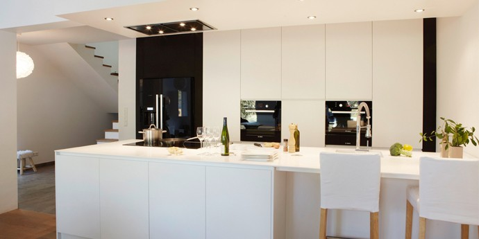
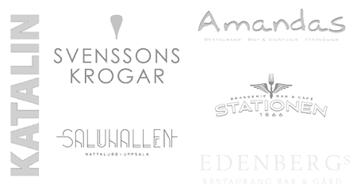

Aros Snickeri tillverkar platsanpassade inredningar och möbler till företag, offentliga miljöer samt privata hem. Vi tar hand om hela processen – från idé till monterad produkt.
Vad vi kan göra →Vi har under åren hjälpt många företag och privatpersoner med specialtillverkade snickerier i alla former. Här kan du titta på några av våra utvalda projekt.
Inspiration →
Aros Snickeri har byggt unika möbler och inredningar i över 20 år. För oss är kvalitet, noggrannhet och flexibilitet ledorden i vår verksamhet.
Om Aros Snickeri →Vi är specialister på inredningar till offentliga miljöer och företag.

Utöver klassiska bänkskivor i trä erbjuder vi nu även måttbeställda bänkskivor i kompositmaterialen Corian® och Staron. En bänkskiva i Corian® eller Staron ger ditt kök en exklusiv och unik känsla. Materialen har en mycket bra hållbarhet och kan designas, formas och skarvas i unika variationer, helt utan synliga fogar eller skarvar.
Läs mer om bänkskivor i Corian® och Staron →
Vi arbetar med beställningssnickerier inom byggnadssnickerier, offentlig miljö samt platsanpassad inredning såsom trappor, receptionsdiskar, bänkskivor, bokhyllor och möbler.
Vi har en toppmodern och välutrustad maskinpark med bland annat datorstyrda maskiner, vilket öppnar upp möjligheten för att tillverka större serier.
Även om vår maskinpark till stor del är datoriserad lever det traditionella hantverket kvar och genomsyrar alla våra snickerier.
Mer om oss →